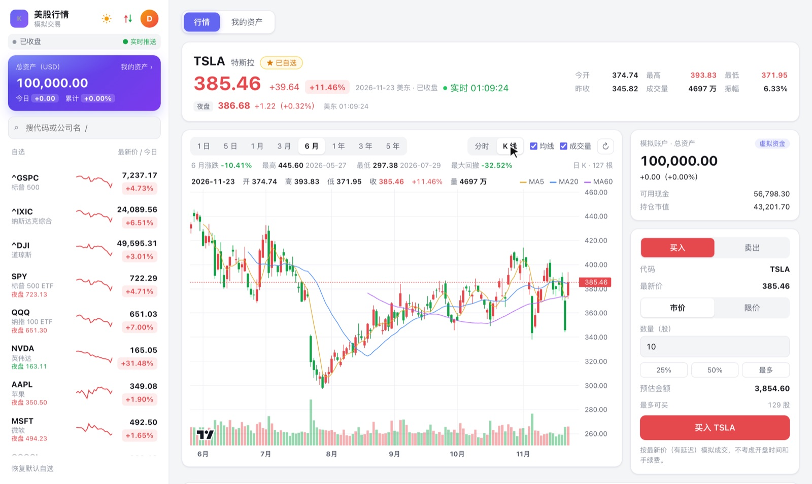
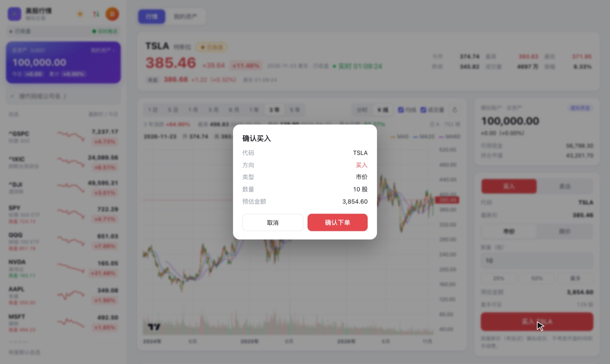
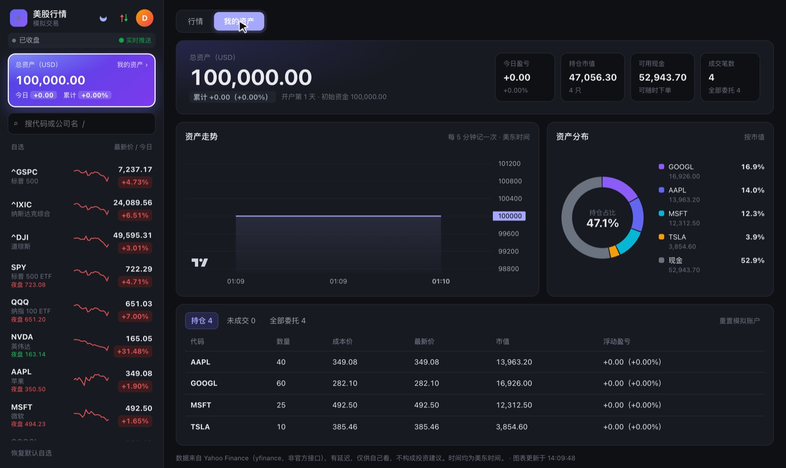

行情和交易放在同一页，看到想买的，右手边直接下单。
交易时段价格秒级跳动，报价、自选、图表最后一根 K 线一起更新；盘前、盘后、夜盘价格单独显示。
1 日、5 日分时到 5 年日 K，一键切换；均线 MA5/20/60、成交量、区间涨跌和最大回撤。
输代码或公司名就能搜，加入自选后看最新价、涨跌幅和近一个月小走势图；登录后换电脑也在。
市价单、限价单、撤单，买卖前二次确认；限价单达到价格自动成交，不能做空、单笔有上限。
总资产、今日盈亏、累计收益一眼看到；资产走势曲线和持仓分布环形图，赚在哪、亏在哪很清楚。
深色 / 浅色主题带过渡动画，红涨绿跌和绿涨红跌一键切换；按 / 直接搜索，加密货币按 24 小时交易显示。
不登录也能看行情；想练交易，注册个用户名就行，不需要手机号和邮箱。
左上角搜索框输入代码或公司名，比如 tesla、NVDA，回车就切过去。

右上角登录 / 注册，新账号自动送 10 万美元虚拟资金。右侧交易面板选买入或卖出、市价或限价，填数量后确认。

顶部切到「我的资产」，或者点侧栏的紫色总资产卡片。

规则尽量简单，专心练判断。
交易时段通过实时价格流推送，一般是秒级；报价和 K 线每 30～60 秒还会兜底刷新一次。数据来自 Yahoo Finance 的公开接口，仅供参考，不构成投资建议。
不会。所有资金都是虚拟的，不接任何券商，也不需要绑卡或实名。
美股按美东时间交易，北京时间晚上 9:30 / 10:30（夏令时 / 冬令时）开盘。盘前、盘后价格会在报价下方单独显示。
看行情、搜股票、切换图表都不用登录；模拟交易、资产和跨设备同步自选需要登录。
密码只存加盐哈希，登录态放在 HttpOnly Cookie 里；连续输错密码会被临时锁定。代码完全开源，可以自己部署一份。